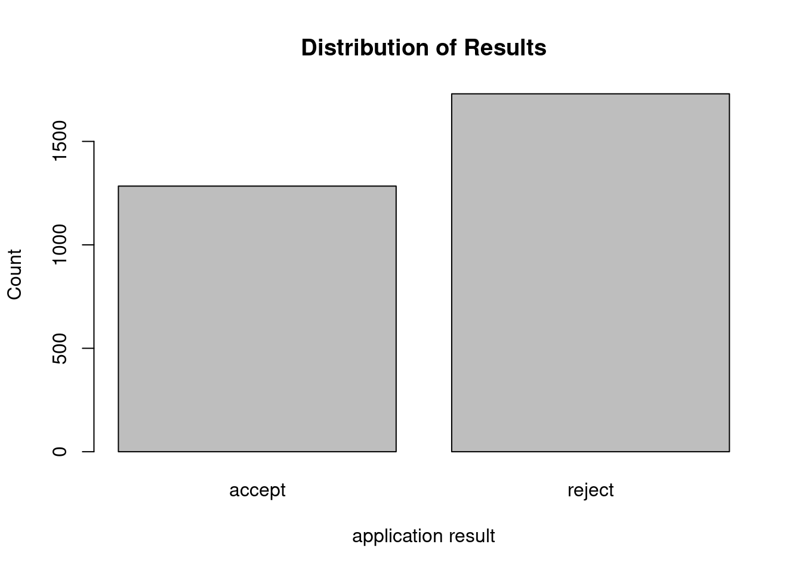

4 Class Activity 4
4.1 Your Turn 1
4.1.1 Flowers v. Mississippi
The data set APM_DougEvensCases.csv contains data from 1517 potential black and white jurors for 66 cases that Doug Evans was primary prosecutor for between 1992 and 2017. These jurors were available for Doug Evans to strike using his “peremptory strikes” during the jury selection phase.
(a). Inspect data
Read in the data
jurors <- read.csv("https://raw.githubusercontent.com/deepbas/statdatasets/main/APM_DougEvansCases.csv")
# dimension of dataset
dim(jurors)[1] 1517 6Look at the first three rows of the data set
jurors[c(1,2,3), ] trial__id race struck_state defendant_race
1 4 Black Not struck by State White
2 4 Black Struck by State White
3 4 White Not struck by State White
same_race struck_by
1 different race Juror chosen to serve on jury
2 different race Struck by the state
3 same race Juror chosen to serve on juryTo get the data from one variable, we use the command dataset$variable. For example, jurors$struck_state gives us the data values from the struck_state variable, which tells us if a juror was struck by the state from the jury pool. Here we can see the first 10 entries in this variable:
jurors$struck_state[1:10] [1] "Not struck by State" "Struck by State"
[3] "Not struck by State" "Not struck by State"
[5] "Struck by State" "Not struck by State"
[7] "Struck by State" "Not struck by State"
[9] "Not struck by State" "Not struck by State"(b). Table of counts and proportions
The summary command used with a data frame gives summaries of each variable
summary(jurors) trial__id race struck_state
Min. : 4.0 Length:1517 Length:1517
1st Qu.: 52.0 Class :character Class :character
Median : 82.0 Mode :character Mode :character
Mean :112.6
3rd Qu.:170.0
Max. :301.0
defendant_race same_race struck_by
Length:1517 Length:1517 Length:1517
Class :character Class :character Class :character
Mode :character Mode :character Mode :character
The table command gives the distribution of counts for a single categorical variable. To obtain the count table for struck_state you need to
counts <- table(jurors$struck_state)
counts
Not struck by State Struck by State
1084 433 We can add the prop.table command to turn these counts into proportions:
prop.table(counts)
Not struck by State Struck by State
0.7145682 0.2854318 - What proportion of eligible jurors were struck by the state from the jury pool?
Click for answer
Answer: about 28.5% of eligible jurors were struck by the state.
(c). Bar graph for one variable
You can create a simple bar graph for one categorical variable with the barplot command. Here we visualize the distribution of struck status for all eligible jurors:
barplot(counts, ylab = "count")(d). Two-way tables
First 10 entries of race and struck_state variable is
jurors[(1:10),(2:3)] race struck_state
1 Black Not struck by State
2 Black Struck by State
3 White Not struck by State
4 White Not struck by State
5 Black Struck by State
6 White Not struck by State
7 Black Struck by State
8 White Not struck by State
9 White Not struck by State
10 White Not struck by StateThe table command also gives two-way tables when two variables are included. Here is the two-way table for juror race and state struck status:
mytable <- table(jurors$race, jurors$struck_state)
mytable
Not struck by State Struck by State
Black 225 310
White 859 123- How many jurors were white and were not struck by the state?
Click for answer
answer: 859
(e). Conditional proportions: state strike status by juror race
The prop.table command gives conditional proportions for a two-way table. We plug our two-way table into prop.table with a margin=1 to get proportions grouped by the row variable:
prop.table(mytable, margin = 1)
Not struck by State Struck by State
Black 0.4205607 0.5794393
White 0.8747454 0.1252546Of all eligible black jurors, about 57.9% were struck by the state.
- What proportion of eligible white jurors were struck by the state?
answer: about 12.5%Click for answer - Is there evidence of an association between juror race and state strikes?
answer: Yes, there is an association because the rate of state strikes varies greatly by juror race with about 60% of black jurors were struck compared to only 13% of white jurorsClick for answer
(f). Stacked bar graph for two variables
We can visualize the conditional distribution from part (e) with a stacked bar graph created using the ggplot2 graphing package. First, load this package’s functions with the library command:
Now we can use the geom_bar command in this package. Here we get the conditional distribution of struck_state given race:
ggplot(jurors, aes(x = race, fill = struck_state)) +
geom_bar(position = "fill") +
labs(title = "State strikes by juror race", y = "proportion",
x = "eligible juror race", fill = "struck by state?")
The basic syntax for this function is to let ggplot know your data set name (jurors), then specify the grouping or conditional variable on the x-axis (race) in the aes (aesthetic) argument. The fill variable is the response variable (struck_state). We add (+) the geom_bar geometry to get a bar graph with the fill position specified. Adding an informative label and title complete the graph.
(g). Conditional distribution of race grouped by strike status
We can “flip” our response and grouping variables easily (if we think it makes sense to do so). Here we specify the margin=2 to get proportions grouped by the column variable:
prop.table(mytable, margin = 2)
Not struck by State Struck by State
Black 0.2075646 0.7159353
White 0.7924354 0.2840647Notice that the proportions add to one down each column. Of all eligible jurors struck by the state, about 71.6% were black.
The stacked bar graph for this distribution is
ggplot(jurors, aes(x = struck_state, fill = race)) +
geom_bar(position = "fill") +
labs(title = "Juror race by state strikes", y = "proportion",
fill = "eligible juror race", x = "struck by state?")
- What proportion of eligible jurors who were not struck by the state were black? were white?
Click for answer
Answer: Of all jurors not struck by the state, about 20.8% were black
4.2 Your Turn 2
4.2.1 Graduate programs acceptance and sex
How are grad school program acceptance rates associated with sex? We will look at a classic data set from Berkeley grad school applications from 1973 (Science, 1975). The data cases are applicants to four graduate programs at Berkeley during 1973. The variable result tells us if the applicant was accepted to the graduate program, sex tells us the sex of the applicant (male or female), and program tells us program type (programs 1,2,3 or 4).
grad <- read.csv("https://raw.githubusercontent.com/deepbas/statdatasets/main/BerkeleyGrad.csv")
# dimension of the dataset
dim(grad)[1] 3014 3
# first 6 rows
head(grad) program sex result
1 program1 male accept
2 program1 male accept
3 program1 male accept
4 program1 male accept
5 program1 male accept
6 program1 male accept(a). Table of counts and proportions
prop.table(table(grad$result))
accept reject
0.4260119 0.5739881 - What proportion of applicants were accepted?
Click for answer
Answer: About 43% (1284/3014) of applicants were accepted.
(b). Two-way tables
The table command also gives two-way tables when two variables are included. Here is the two-way table for result and sex:
table(grad$sex, grad$result)
accept reject
female 262 587
male 1022 1143- How many applicants involved females who were accepted?
Click for answer
Answer: : 262 applicants involved females who were accepted.
(c). Conditional proportions: acceptance given sex
The prop.table command gives conditional proportions for a two-way table. First let’s save the two-way table in an object named mytable:
mytable <- table(grad$sex, grad$result)Then use prop.table to get the distribution of result conditioned (grouped) on applicant’s sex:
prop.table(mytable, 1)
accept reject
female 0.3085984 0.6914016
male 0.4720554 0.5279446The value of 1 in this command tell’s R that you want row proportions (the denominator of the proportion is each row total).
- What proportion of female were accepted?
Click for answer
Answer: about 31% (262/(262+587))
- What proportion of males were accepted?
Click for answer
Answer: about 47% (1022/(1022+1143))
(d). Bar graph for one variable
You can create a simple bar graph for one categorical variable with the barplot command. Here we visualize the distribution of result:

We can add in a title and x and y axis labels too:
barplot(table(grad$result), xlab="application result",
ylab="Count", main = "Distribution of Results")
(e). Stacked bar graph for two variables
Now we can use the geom_bar command in this package. Here we get the conditional distribution of result given sex:
library(ggplot2) # don't need if you already entered it for example 1
ggplot(grad, aes(x = sex, fill = result)) +
geom_bar(position = "fill") +
labs(y="Proportion", title = "result by sex", fill = "result?", x = "sex")The basic syntax for this function is to let ggplot know your data set name (grad), then specify the grouping or conditional variable on the x-axis (sex) in the aes (aesthetic) argument. The fill variable is the response variable (result). We add (+) the geom_bar geometry to get a bar graph with the fill position specified. Adding an informative label and title complete the graph.
- Verify that this graph is plotting the conditional proportions from part (c)
(f). Subsetting by program type
Finally, we will repeat the previous analysis of result and sex, but this time we will divide (or subset) the data set by program type. To do this we need to know how the values of program are coded:
table(grad$program)
program1 program2 program3 program4
933 585 782 714 Here we use the filter command available from the dplyr package to get only the applicants to program 1:
library(dplyr)
grad.p1 <- filter(grad, program == "program1") # gets rows where program equal program1
head(grad.p1) program sex result
1 program1 male accept
2 program1 male accept
3 program1 male accept
4 program1 male accept
5 program1 male accept
6 program1 male accept
dim(grad.p1)[1] 933 3Verify that the number of rows in the subsetted program 1 data set matches the number of program 1 applicants shown in the table of counts above.
- Repeat the
filtercommand to get a data set for program 2 and call the new data setgrad.p2. Verify that the number of rows in this dataset matches the number of program 2 applicants in the original data set.
# enter R code for (f) here
grad.p2 <- filter(grad, program == "program2") # gets rows where program equal program1
head(grad.p2) program sex result
1 program2 male accept
2 program2 male accept
3 program2 male accept
4 program2 male accept
5 program2 male accept
6 program2 male accept(g). Result by sex for program 1.
- Show the distribution of result conditioned on applicant’s sex for the program 1 data set. Get both a table of conditional proportions (or percentages) and a stacked bar graph.
Click for answer
# enter R code for (g) here
ggplot(grad.p1, aes(x = sex, fill = result)) +
geom_bar(position = "fill") +
labs(y="Proportion", title = "result by sex for program 1",
fill = "result?", x = "sex")
prop.table(table(grad.p1$sex, grad.p1$result),1)
accept reject
female 0.8240741 0.1759259
male 0.6193939 0.3806061(h). Result by sex for program 2.
- Repeat part (g) but this time use the program 2 data set. Compare the two bar graphs for (g) and (h) and explain how they show that females have a higher acceptance rate after accounting for program type (1 or 2).
Click for answer
# enter R code for (h) here
ggplot(grad.p2, aes(x = sex, fill = result)) +
geom_bar(position = "fill") +
labs(y="Proportion", title = "result by sex for program 2",
fill = "result?", x = "sex")
prop.table(table(grad.p2$sex, grad.p2$result),1)
accept reject
female 0.6800000 0.3200000
male 0.6285714 0.3714286Answer: For both programs 1 and 2, we see that female applicants have a slightly higher rate of acceptance than male applicants. After accounting for program type, we now see that black defendants have a higher rate of death penalty than white defendants. Without accounting for program type, the opposite was true (see parts (c) and (e)).
Why? the confounding affect of program type which is associated with both result and sex:
Click for answer
- females prefer to apply to programs 3 and 4 while males prefer programs 1 and 2 (more than 3 and
4).
- 44% of females applied to program 3 and 40% to program 4
- 38% of males applied to program 1 and 26% to program 2
prop.table(table(grad$sex, grad$program), 1)
program1 program2 program3 program4
female 0.12720848 0.02944641 0.44169611 0.40164900
male 0.38106236 0.25866051 0.18799076 0.17228637-Programs 3 and 4 were much harder to get into than programs 1 and 2 - 64% of applicants to program 1 were accepted and 63% of applicants to program 2 were accepted - 6% of applicants to program 4 were accepted and 34% of applicants to program 3 were accepted
prop.table(table(grad$program, grad$result), 1)
accept reject
program1 0.64308682 0.35691318
program2 0.63076923 0.36923077
program3 0.34398977 0.65601023
program4 0.06442577 0.93557423So since the majority of females applied to the toughest programs (as measured by acceptance rates), there overall rate of acceptance was lower for females compared to males. But when we break down these rates by program type, we see that females have higher acceptance rates than males (see the visual in part (i)).
(i). A bar graph with three variables
If we simply want to graph the relationship between result and sex for each type of program, we can avoid subsetting the data by using the facet_wrap command in ggplot2. It is one simple addition to the stacked bar graph in part (e):
ggplot(grad, aes(x = sex, fill = result)) +
geom_bar(position = "fill") +
labs(y="Proportion",
title = "result by sex for each program",
fill = "result?",
x = "sex") +
facet_wrap(~program)
- Verify that this command creates side-by-side stacked bar graphs that match your graphs in parts (g) and (h) for programs 1 and 2.
Click for answer
Answer: The graphs match.
4.3 Quiz
1. A two-way table is shown for two groups, 1 and 2, and two possible outcomes, A and B.
| Outcome A | Outcome B | Total | |
|---|---|---|---|
| Group 1 | 40 | 10 | 50 |
| Group 2 | 30 | 120 | 150 |
| Total | 70 | 130 | 200 |
What proportion of all cases are in Group 1?
A. 0.33
B. 0.20
C. 0.25
D. 0.75
Click for answer
C. 0.25
2. A disruption of a gene called DYXC1 on chromosome 15 for humans may be related to an increased risk of developing dyslexia. Researchers studied the gene in 109 people diagnosed with dyslexia and in a control group of 195 others who had no learning disorder. The DYXC1 break occurred in 10 of those with dyslexia and in 5 of those in the control group. Is this an experiment or an observational study?
A. Experiment
B. Observational Study
Click for answer
Observational Study
3. The data from question 2 can be summarized in a two way table as:
| Gene Break | No Break | Total | |
|---|---|---|---|
| Dyslexia Group | 10 | 99 | 109 |
| Control Group | 5 | 190 | 195 |
| Total | 15 | 289 | 304 |
What is the proportion of Dyslexia group who have the break on the DYXC1 gene? Round your answer to 3 significant digits after the decimal.
A. 0.026
B. 0.667
C. 0.127
D. 0.092